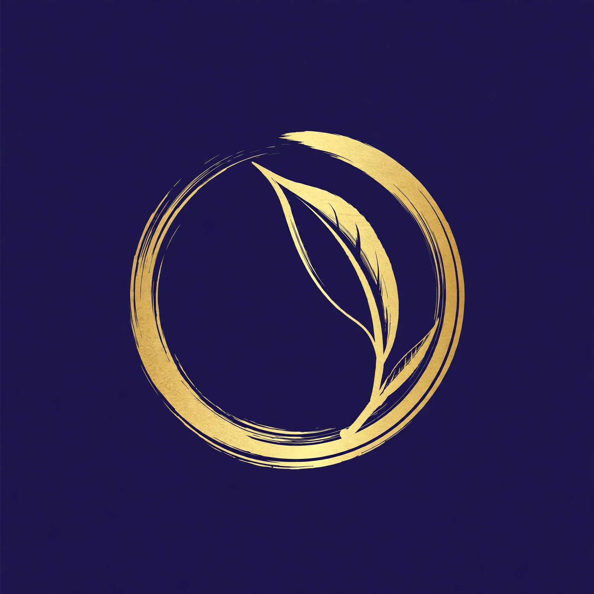
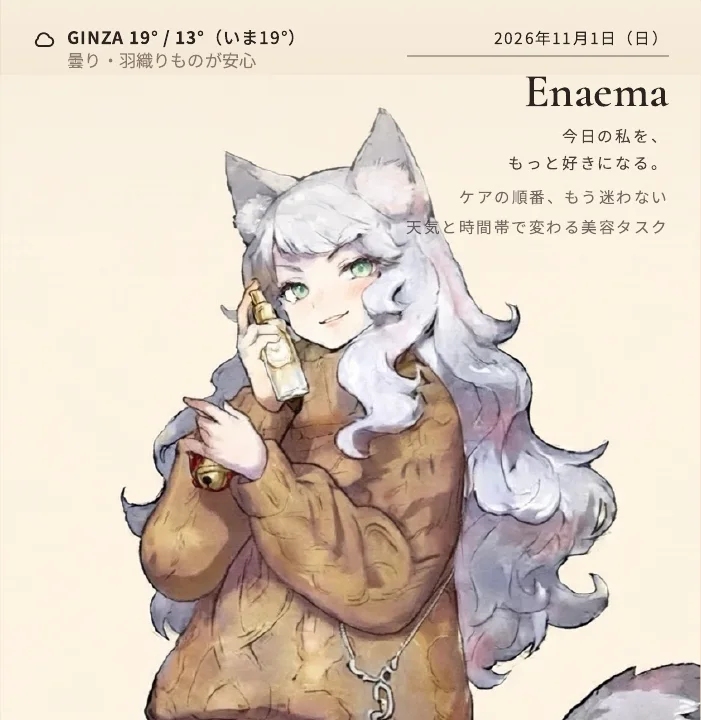

茶屋
アプリとメディアを、ひとりで作っています。

APPSアプリ
すべて公開中です。タップでそのまま開きます。
CASES実例
Enaema実績・稼働中
- 課題
- 天気と時間帯で変わる美容ケアの、順番に迷う。
- 設計
- 毎朝開く、私だけの美容誌の表紙。表紙とタスクが日替わり。
- 制作
- ログインと天気連動まで実装したWebアプリ。
- 現状
- 公開中。Googleログインで、誰でも使えます。
マァスゥ実績・稼働中
- 課題
- 紹介から始まるつながりに、期限と安全の仕組みが要る。
- 設計
- プロフィール集約のホーム＋期限つきの接続。
- 制作
- 招待リンクが必須の、紹介制SNS。
- 現状
- 公開中。テスト運用を続けています。
会員制サービスの見本デモ・架空データ使用中
- 課題
- 会員制の入口は、見せないことと伝わることの両立が要る。
- 設計
- 入口の約束は1つだけ。料金は1つの比較表に集約。
- 制作
- LPと、会員ページのデモ一式。
- 現状
- 見本として公開中。登場するクラブと会員は、すべて架空です。
SAMPLESサイト見本
SERVICEご依頼について
依頼できる範囲
新規サイトの制作と、今あるサイトのリニューアル。スマホ対応、https化、問い合わせへの導線、地図とSNSへのリンク、写真と文面の差し替えができます。素材（写真・文章）は、ご支給いただく形が原則です。
予約システム、ネット決済、会員機能は対象外です。毎日の更新代行と、写真撮影そのものも行いません。機能を絞る代わりに、公開後の月額維持費がかからない設計にしています。
制作の進め方
- 1要件整理今の困りごとと、サイトで変えたいことを伺います。
- 2構造設計見本の型から選んで、完成形を先に確認します。
- 3制作写真と文章をお預かりして、作ります。
- 4動作確認スマホで実際に開いて、導線まで確認します。
- 5公開公開して、ファイル一式をお渡しします。
納品と運用
納品物は、公開済みのサイトとファイル一式です。そのまま渡せる形にします。運用は静かな静的サイトの設計で、独自ドメイン代のみ実費、それ以外の固定費はかかりません。
料金と納期は、内容を伺ってからご案内します。
MEDIAメディア
WORKS作品
LINEスタンプクリエイター名「AO」。マーモットの「まぁ＆すぅ」ほか。
長編ライトノベル完結済み。